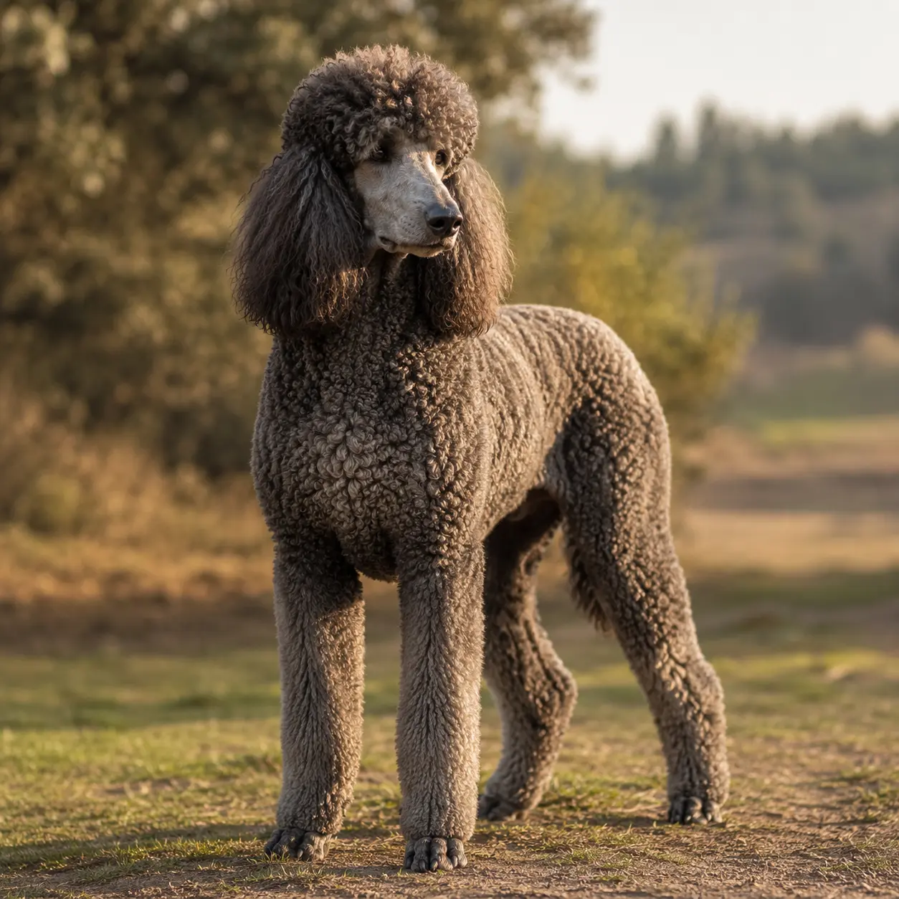
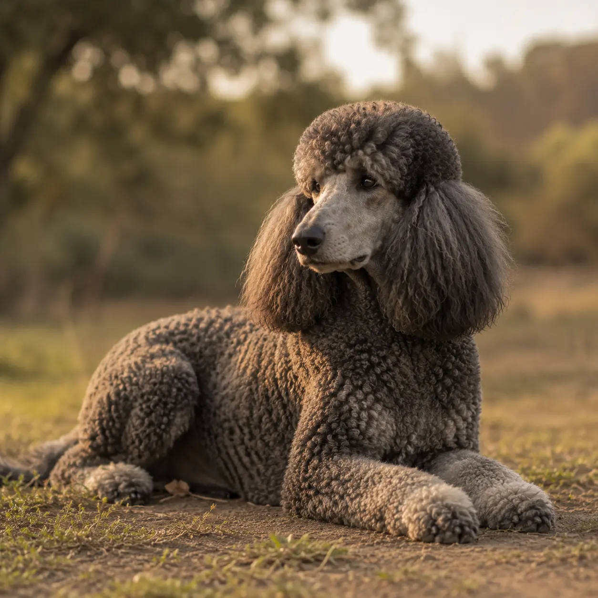

Quieres un caniche gigante de verdad y no encuentras a nadie cerca: todos los criadores serios están en el norte. Aquí, en Lorca, llevamos 45 años seleccionando esta raza, y ningún cachorro sale por la puerta sin estar sano del todo.
45 años
Seleccionando la raza
45-60 cm
Talla de un caniche gigante
100%
Analíticas antes de entregar
5,0★
16 reseñas en Google
No somos un intermediario ni una tienda. Aquí ves al padre, ves a la madre y sabes de dónde viene tu cachorro. Llevamos 45 años seleccionando esta raza en Lorca, eligiendo cada cruce por carácter, salud y conformación.

Talla y estructura de gigante de verdad, carácter estable y genealogía que se puede comprobar. El comprador serio de caniche siempre pregunta por el padre — aquí lo ves y lo conoces. Es el carácter que queremos que pase a la camada.

En el caniche, la hembra transmite tanto carácter y salud como el macho — por eso la elegimos con el mismo cuidado. Equilibrio, salud documentada y muy buena madre. De ella sale la mitad de lo que será tu perro.
El color es una de las primeras preguntas que nos hacen. El negro y el marrón son los más frecuentes; el gris y el apricot, algo menos comunes; y el particolor es el más raro — y por eso el más caro. Dime qué buscas y te digo qué tenemos previsto en la próxima camada.
Vas a pagar entre 1.500 y 1.800 € por tu cachorro. Tu mayor miedo es que te lo lleves enfermo. Aquí lo eliminamos de raíz: analíticas completas el día antes de la entrega, con coste real de 150 € por animal.
No es «vacunado y desparasitado» como pone cualquier anuncio. Es un informe clínico de verdad: parvovirus, giardia, coronavirus y serología, cada prueba hecha y firmada. Cuesta 150 € hacerlo bien, y lo recibes el día que te llevas al perro.
Lo digo siempre igual: «te lo llevas saludable, porque si no está saludable, no te lo llevas hasta que no esté saludable». Mientras otros venden «15 días de garantía vírica», aquí la garantía es antes, no en un papel a los 15 días.

No tenemos camadas constantes ni vendemos a cualquiera. Si quieres un caniche gigante de verdad, lo normal es esperar a la próxima — y merece la pena. Pregúntame y te digo qué hay y qué viene.
Dime qué buscas (sexo, color) y te aviso en cuanto haya camada prevista. Se reserva con una señal y se formaliza cuando el cachorro está listo y sano. Sin prisas y sin sorpresas.
notifications_activeEntrar en la lista de esperaEstás en Madrid, Barcelona o Sevilla y te frena la distancia. No te frene: organizamos el transporte con todas las garantías hasta tu casa. Cuéntame dónde estás y vemos la mejor forma de llevártelo.
chatPreguntar por el envíoEl precio de mercado está en torno a 1.500 € y hasta 1.800 € en particolor. Dentro va el informe clínico de 150 €, las analíticas, la documentación completa y un perro criado con criterio. En esta raza, el «chollo» de Milanuncios lo acabas pagando después en el veterinario. Llámame y te doy el precio de la camada actual.
16 reseñas en Google, todas de 5 estrellas. No hemos pedido ni una.
"Muy amables y cercanos, unas instalaciones muy buenas. Llevo allí a mi doberman desde que tenía 5 meses, ahora tiene 11 y estoy muy contento. Juan Miguel es un gran adiestrador."
Jorge Hernandez
Google Maps
"Llevo solo 2 clases con mi pastor belga Malinois y muy contento desde el primer momento. Personal muy agradable y cercano, instalaciones perfectas. Juan Miguel es un profesional."
Jose Antonio Hernandez
Google Maps
"El sitio perfecto para mi beagle. Mi bigotitos se tira del coche en cuanto llegamos a la puerta. Hace dos años que llevo mi beagle, tanto de alojamiento como de peluquería, y para mí genial."
Vicente Miguel Ros
Google Maps · Local Guide
"Profesionales y ante todo buenas personas. Instalaciones únicas idóneas para los perros. Calidad en el servicio y pasión por lo que hacen. Solo puedo decir todo 10."
Francisco Alcaraz
Google Maps
"Me gusta mucho el centro. Trataron muy bien a mi perrita, además el paso por la peluquería súper bien. Me la dejaron súper limpia."
Sarai Ayllon Abellan
Google Maps · Local Guide
Una llamada o un WhatsApp y hablas directamente conmigo. Te cuento qué hay disponible y, si no hay nada ahora, te aviso en cuanto haya camada. Sin humo y sin compromiso.
Teléfono
670 36 06 76
670 36 06 76
Dónde estamos
Cam. de los Valencianos, 24
30813 Lorca, Murcia · Envíos a toda España